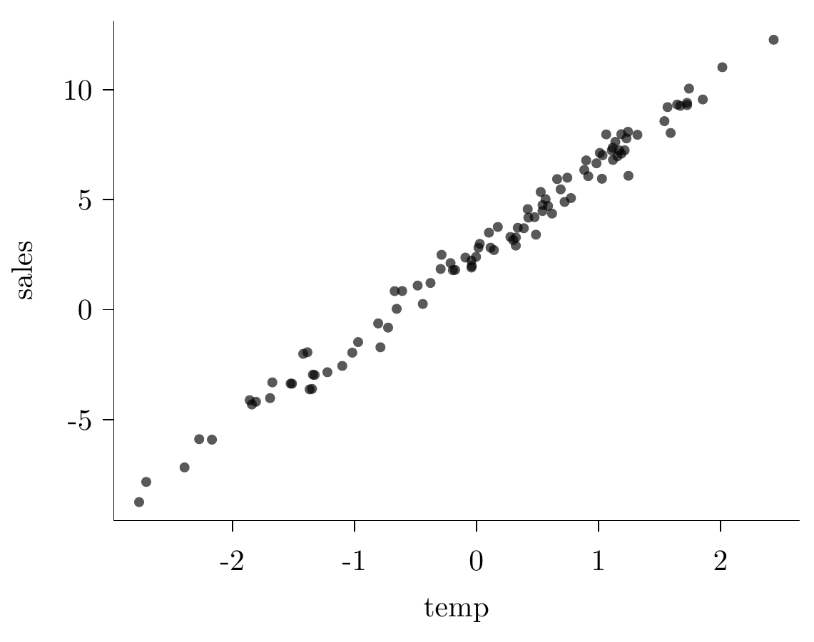
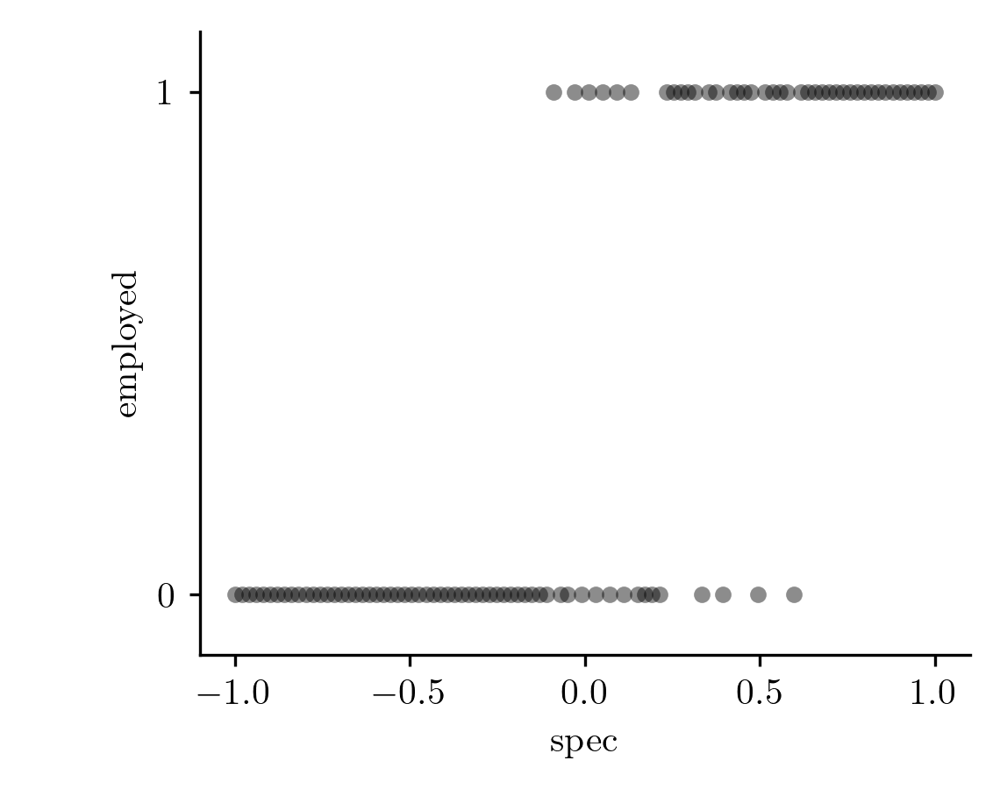
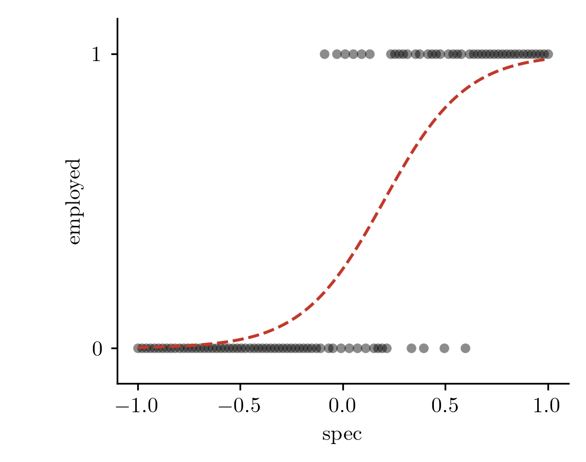
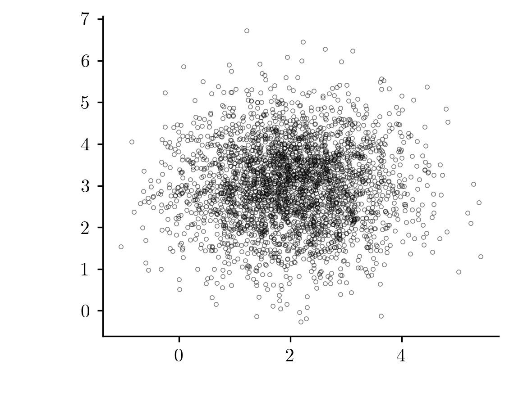

02wk-2: 모델링과 모수추정 (2), 가능도 (1)
1. 강의영상
2. 네임드분포
- 확률분포표로 정의되는 \(P\)는 데이터를 만들어내는 규칙을 의미한다고 볼 수 있다.
- \(P\)는 진실공간의 정보이다.
- \(P\)는 종종 추정의 대상이 되기도 한다.
- \(P\)는 “데이터를 만드는 방법을 정리한 정보” 라고 해석할 수 있다.
- \(P\)는 \(X\)가 가질수 있는 값의 범위를 정의한다는 (놓치기 쉬운) 사실도 주목하자. 예를들어 아래의 표와 같은 \(P(X=x)\)는 \(X\)가 가질 수 있는 값이 0과 1임을 의미한다.
| \(x\) | 0 | 1 |
|---|---|---|
| \(P(X=x)\) | \(1-\theta\) | \(\theta\) |
d - \(P\)를 정의하는 방식은 매우 다양하다. 예를들어 아래와 같은 확률분포표를 고려하자.
| \(x\) | 0 | -1 | 1023 |
|---|---|---|---|
| \(P(X=x)\) | 0.5 | 0.2 | 0.3 |
이것은 시행을 해서 얻은 결과가 0일 확률이 0.5이고 -1일 확률이 0.2이고 1023일 확률이 0.3이라는 의미이다.
- 일부의 \(P\)는 사람들이 자주 애용하는 편인데 그런 경우 이름을 붙이는 것이 편리하다는 생각을 하였다. 예를들어 아래와 같은 분포는 사람들이 관심이 있는 편인데
| \(x\) | 0 | 1 |
|---|---|---|
| \(P(X=x)\) | 0.5 | 0.5 |
이러한 분포는 사람들이 베르누이라고 부른다.
- 아래와 같은 분포도 사람들이 종종 관심이 있다. (공평한 동전을 두번던져서 앞면이 몇번나오는지를 세면 된다)
| \(x\) | 0 | 1 | 2 |
|---|---|---|---|
| \(P(X=x)\) | 0.25 | 0.5 | 0.25 |
따라서 이러한 분포에도 이름이 붙어있는데 이것을 이항분포라고 한다.
- 아래와 같은 분포도 이항분포라 부른다. (공평한 동전을 5번 던져서 앞면이 몇번 나오는지 세어본다고 상상하자)
| \(x\) | 0 | 1 | 2 | 3 | 4 | 5 |
|---|---|---|---|---|---|---|
| \(P(X=x)\) | 0.03125 | 0.15625 | 0.3125 | 0.3125 | 0.15625 | 0.03125 |
- 네임드분포는 종종 한두개의 숫자로 특정지을 수 있다. 예를들어 베르누이 분포는
| \(x\) | 0 | 1 |
|---|---|---|
| \(P(X=x)\) | ??? | ??? |
의 형태를 가지는데 \(P(X=1)\)에 대응하는 숫자만 특정한다면 나머지는 자동으로 정해진다.
- 아래와 같은 분포는
| \(x\) | 0 | 1 | 2 |
|---|---|---|---|
| \(P(X=x)\) | 0.25 | 0.5 | 0.25 |
분포를 특정하기 위해 최소 2개의 숫자를 정해야할 것 처럼 보인다. 하지만 이항분포가 독립적인 베르누이 시행을 결합하여 얻은 결과란 사실을 캐치하면 이것 역시 하나의 숫자로 분포를 특정할 수 있음을 알게 된다.
- 분포를 특정하는데 필요한 숫자를 모수라 한다. 일반적으로 모수는 \(\theta\)라는 기호를 사용한다. 그렇지만 모수가 특별한 의미를 가짐을 강조하면 \(\theta\)대신에 다른기호를 쓰기도 한다. (예를들면 \(p\))
- 네임드분포를 잘 정의해두면 편리하다. 왜냐하면
\[X \sim P_\theta\] 단, \(P_\theta(X=x)\)는 아래의 표와 같이 정의된다.
| \(x\) | 0 | 1 |
|---|---|---|
| \(P_\theta(X=x)\) | \(1-\theta\) | \(\theta\) |
라고 정의해야 할 일을 \(X \sim Bernoulli(\theta)\)라고 간단히 정의할 수 있기 때문이다.
3. 모델링
- 주어진 데이터를 관찰하며 “이 데이터는 이러이러한 규칙으로 만들어진 것 같아” 라고 생각하며 “데이터를 만드는 부분”을 역으로 상상하는 문제를 고려하자. 이처럼 데이터가 만들어지는 규칙을 전반적으로 상상하는 과정을 모델링이라고 한다. 예를들어 관측한 \(n\)개의 데이터가 정규분포에서 나왔다고 상상한다면 이는 아래와 같이 모델링을 한 것이다.
\[X_1,\dots,X_n \sim N(\mu,\sigma^2)\]
모델링을 통해 상상한 규칙을 구체화하는 과정에서 어떠한 숫자들을 특정해야 한다면, 그걸 추정하고자 할텐데, 이러한 행위를 모수추정이라고 한다.
# 예제 1 – 아이스아메리카노 판매량
- 카페주인 박혜원씨는 온도와 아이스아메리카노 판매량을 아래와 같이 조사하였다.
temp = (-2.7641, -2.7057, -2.3917, -2.2718, -2.1673, -1.8582, -1.8398, -1.8065,
-1.6910, -1.6726, -1.5225, -1.5117, -1.4192, -1.3853, -1.3668, -1.3477,
-1.3398, -1.3260, -1.2211, -1.0998, -1.0174, -0.9696, -0.8054, -0.7868,
-0.7242, -0.6705, -0.6537, -0.6088, -0.4819, -0.4396, -0.3766, -0.2933,
-0.2864, -0.2123, -0.1932, -0.1749, -0.0907, -0.0414, -0.0411, -0.0383,
-0.0035, 0.0166, 0.0267, 0.1021, 0.1152, 0.1430, 0.1750, 0.2780,
0.3008, 0.3221, 0.3226, 0.3384, 0.3879, 0.4200, 0.4250, 0.4756,
0.4875, 0.5262, 0.5409, 0.5413, 0.5662, 0.5863, 0.6191, 0.6608,
0.6898, 0.7222, 0.7443, 0.7741, 0.8831, 0.8990, 0.9154, 0.9832,
1.0108, 1.0280, 1.0329, 1.0631, 1.1082, 1.1163, 1.1184, 1.1379,
1.1549, 1.1694, 1.1871, 1.1872, 1.2140, 1.2289, 1.2417, 1.2452,
1.3188, 1.5399, 1.5653, 1.5910, 1.6444, 1.6698, 1.7255, 1.7259,
1.7416, 1.8544, 2.0144, 2.4352)
sales= (-8.7528, -7.8347, -7.1757, -5.8897, -5.9130, -4.1209, -4.3131, -4.1892,
-4.0253, -3.3098, -3.3651, -3.3674, -2.0116, -1.9380, -3.6284, -3.6070,
-2.9573, -2.9716, -2.8466, -2.5604, -1.9572, -1.4768, -0.6287, -1.7125,
-0.8194, 0.8411, 0.0340, 0.8442, 1.0941, 0.2566, 1.2104, 1.8471,
2.4904, 2.1141, 1.7935, 1.8044, 2.3660, 1.9115, 2.2285, 1.9903,
2.3971, 2.8128, 2.9881, 3.4981, 2.8164, 2.7074, 3.7572, 3.3024,
3.1624, 2.9085, 3.2794, 3.7200, 3.6997, 4.5673, 4.1811, 4.2020,
3.4067, 5.3503, 4.4822, 4.7522, 5.0233, 4.7126, 4.3650, 5.9347,
5.4652, 4.8948, 5.9982, 5.0711, 6.3486, 6.7835, 6.0660, 6.6519,
7.1216, 5.9491, 7.0176, 7.9653, 7.2363, 7.3597, 6.8046, 7.6279,
6.9700, 7.2392, 7.9761, 7.0902, 7.2431, 7.7843, 8.0832, 6.0844,
7.9475, 8.5681, 9.2061, 8.0291, 9.3233, 9.2633, 9.3993, 9.2976,
10.0482, 9.5539, 11.0175, 12.2671)
그리고 온도와 아이스아메리카노 판매랑이 어떠한 관계가 있다는 사실을 알았다. 구체적으로는 “온도가 높아질수록 (=날씨가 더울수록) 아이스아메리카노 판매량이 증가” 한다는 사실을 알게 되었다.
- 사실 진실은 이러하다. 내가 \(y_i = \text{sales}_i\), \(x_i = \text{temp}_i\) 라고 생각하고 데이터를 만들었다.
\[y_i = 2.5 + 4 x_i + \epsilon_i, i=1,2,\dots,n\]
박혜원씨는 내가 데이터를 이렇게 만든걸 “모른다.”
- 박혜원씨의 의심: 이 세상이 혹시 시뮬레이션 아니야??? 누군가(=최규빈)가 적당히 아래와 같이 만든거 아니야??
n <- 100
β₀ <- ??
β₁ <- ??
σ <- ??
x <- sort(rnorm(n))
ε <- rnorm(n) * σ
y <- β₀ + β₁*x + ε
temp <- x
sales <- y- 박혜원씨의 전략: 앞으로 이 세상은 시뮬레이션이라고 가정하자. 즉 데이터가 이러한 방식으로 만들어 졌다고 “믿자”. (질문: 아닐수도 있잖아요? // 답변: 상관없어요)
n <- 100
β₀ <- ??
β₁ <- ??
σ <- ??
x <- sort(rnorm(n))
ε <- rnorm(n) * σ
y <- β₀ + β₁*x + ε
temp <- x
sales <- y그리고 저 모델(위의 코드형태)이 맞다는 전제하에 \(\beta_0\), \(\beta_1\)을 적당한 값으로 추정하자.
- 위와 같은 코드형태를 제시하는 과정을 모델링이라고 하고, 위 코드 형태에서 ??의 특정 숫자까지 구체화하는 과정을 추정이라고 한다.
#
- Note: 위의 코드형태를 가정한다는 것은 사실 아래의 수식을 가정한다는 것과 같은 말이다.
\[y_i = \beta_0 + \beta_1 x_i+ \epsilon_i, \quad \epsilon_i \sim N(0,??)\]
따라서 박혜원씨는 사실
\[y_i \sim N(\beta_0+\beta_1 x_i, ??)\]
의 꼴에서 모평균을 알고 싶은 상황이라 볼 수 있다. (??는 모르지만 알필요없다)
아래가 성립하듯이
\(X \sim N(0,??) \Rightarrow X+1 \sim N(1,??)\)
아래도 성립한다.
\(\epsilon_i \sim N(0,??) \Rightarrow \epsilon_i+\beta_0+\beta_1 x_i \sim N(\beta_0+\beta_1 x_i,??)\)
이제 \(y_i = \beta_0+\beta_1x_i + \epsilon_i\) 를 이용하면
\(y_i \sim N(\beta_0+\beta_1 x_i,??)\)
# 예제2 – 이것도 모델링
- 아래의 숫자들을 관찰하자.
-0.5310, 0.0524, -0.5686, -0.9011, 0.2527, 0.5910, 0.7869, 0.5020- 이러한 숫자들을 보고 누군가는 아래와 같은 모형을 상상할 것이다.
\[X_1,\dots,X_8 \overset{i.i.d.}{\sim} U(a,b)\]
- 누군가는 아래와 같은 모형을 상상할 것이다.
\[X_1,\dots,X_8 \overset{i.i.d.}{\sim} N(\mu,\sigma^2)\]
- 사실 진실은 이러하다.
set.seed(43052)
x <- runif(8, -1, 1)따라서 \(U(a,b)\) 을 상상한 쪽은 올바른 모델링을 한 것이고, \(N(\mu,\sigma^2)\) 을 상상한 쪽은 잘못된 모델링을 한 것이다. 그래서 \(U(a,b)\) 가 현실에서는 좀 더 쓸만한 모델이 된다.
#
- 강의흐름과 약간 결이 다른 메시지: 사실 현실에서는 올바른 모델링이란 거의 불가능하다. 그래서 올바른 모델을 찾기위햇 노력하기 보다 쓸모있는 모델을 찾기 위한 노력하는 것이 더 의미있는 경우가 많다.
George Box: “All models are wrong, but some are useful.”
# 예제3 – 스펙과 취업
- 박혜원씨는 스펙과 취업이 어떠한 관계를 가지는지 알기 위하여 100명의 자료를 조사하였다.
spec = (-1.0000, -0.9798, -0.9596, -0.9394, -0.9192, -0.8990, -0.8788, -0.8586,
-0.8384, -0.8182, -0.7980, -0.7778, -0.7576, -0.7374, -0.7172, -0.6970,
-0.6768, -0.6566, -0.6364, -0.6162, -0.5960, -0.5758, -0.5556, -0.5354,
-0.5152, -0.4949, -0.4747, -0.4545, -0.4343, -0.4141, -0.3939, -0.3737,
-0.3535, -0.3333, -0.3131, -0.2929, -0.2727, -0.2525, -0.2323, -0.2121,
-0.1919, -0.1717, -0.1515, -0.1313, -0.1111, -0.0909, -0.0707, -0.0505,
-0.0303, -0.0101, 0.0101, 0.0303, 0.0505, 0.0707, 0.0909, 0.1111,
0.1313, 0.1515, 0.1717, 0.1919, 0.2121, 0.2323, 0.2525, 0.2727,
0.2929, 0.3131, 0.3333, 0.3535, 0.3737, 0.3939, 0.4141, 0.4343,
0.4545, 0.4747, 0.4949, 0.5152, 0.5354, 0.5556, 0.5758, 0.5960,
0.6162, 0.6364, 0.6566, 0.6768, 0.6970, 0.7172, 0.7374, 0.7576,
0.7778, 0.7980, 0.8182, 0.8384, 0.8586, 0.8788, 0.8990, 0.9192,
0.9394, 0.9596, 0.9798, 1.0000)
employed = ( 0, 0, 0, 0, 0, 0, 0, 0,
0, 0, 0, 0, 0, 0, 0, 0,
0, 0, 0, 0, 0, 0, 0, 0,
0, 0, 0, 0, 0, 0, 0, 0,
0, 0, 0, 0, 0, 0, 0, 0,
0, 0, 0, 0, 0, 1, 0, 0,
1, 0, 1, 0, 1, 0, 1, 0,
1, 0, 0, 0, 0, 1, 1, 1,
1, 1, 0, 1, 1, 0, 1, 1,
1, 1, 0, 1, 1, 1, 1, 0,
1, 1, 1, 1, 1, 1, 1, 1,
1, 1, 1, 1, 1, 1, 1, 1,
1, 1, 1, 1)
-스펙과 취업도 어떠한 관계가 있다는 사실은 알 수 있다. 구체적으로는 “스펙이 높을수록 (=준비를 많이 했을수록) 취업할 확률이 증가” 한다는 사실을 알게되었다.
- 스펙이 낮은 쪽은 취업여부가 계속 0 이고, 높은 쪽은 계속 1 이다. 그 사이에는 0 과 1 이 섞인다.
- 사실 진실은 이러하다. 내가 \(y_i = \text{employed}_i\), \(x_i = \text{spec}_i\) 라고 생각하고 데이터를 만들었다.
\[y_i \sim Bernoulli(\pi_i), \quad \pi_i = \frac{\exp(-1 + 5 x_i)}{1+\exp(-1 + 5 x_i)}, \quad i=1,2,\dots,n\]

빨간 점선이 \(\pi_i\) 이다. 취업여부(데이터)는 0 과 1 뿐이지만 그것을 만들어내는 underlying function(진실)은 S자 모양의 빨간 곡선이다. (하지만 박혜원씨는 내가 데이터를 이렇게 만든걸 “모른다.”)
- 박혜원씨의 의심: 이 세상도 혹시 시뮬레이션 아니야??? 누군가가 적당히 아래와 같이 만든거 아니야??
x <- seq(-1, 1, length.out = 100)
β₀ <- ??
β₁ <- ??
π <- exp(β₀ + β₁*x) / (1 + exp(β₀ + β₁*x))
y <- rbinom(n, 1, π)
spec <- x
employed <- y- 박혜원씨의 전략: 앞으로 이 세상도 시뮬레이션이라고 가정하자. 즉 데이터가 위와 같은 코드에서 만들어 졌다고 믿자. 그리고 저 코드형태가 맞다는 전제하에 \(\beta_0\), \(\beta_1\)을 적당한 값으로 추정하자.
- 코드형태를 제시하는 과정을 모델링이라고 하고, 위 코드 형태에서 ??의 특정 숫자까지 구체화하는 과정을 추정이라고 한다. 예제1 과 같다.
#
- Note: 위의 코드형태를 가정한다는 것은 사실 아래의 수식을 가정한다는 것과 같은 말이다.
\[y_i \sim Bernoulli(\pi_i), \quad \pi_i = \frac{\exp(\beta_0 + \beta_1 x_i)}{1+\exp(\beta_0 + \beta_1 x_i)}\]
따라서 박혜원씨는 사실
\[y_i \sim Bernoulli \left(\frac{\exp(\beta_0 + \beta_1 x_i)}{1+\exp(\beta_0 + \beta_1 x_i)}\right)\]
의 꼴에서 모평균을 알고싶은 상황이라 볼 수 있다. 예제1 에서 \(N(\beta_0+\beta_1x_i,??)\) 의 모평균을 알고싶어 했던 것과 같다. (베르누이의 평균은 \(\pi_i\) 이다)
- Note: 예제1,2,3에서 소개된 모든 모델링을 뭉뚱그려서
\[Y \sim P_{\theta}\] 혹은
\[X \sim P_{\theta}\]
라고 쓸 수도 있다.
예제1
\[P_\theta(y_i=y) = f_\theta(y), \quad f_\theta \text{는 평균 } \beta_0+\beta_1x_i \text{, 분산 } ?? \text{ 인 정규분포의 pdf}\]
이때 \(\theta=(\beta_0,\beta_1)\) 이다.
예제2
누군가의 상상1: \[P_\theta(X_i=x) = f_\theta(x), \quad f_\theta \text{는 구간 } (a,b) \text{ 위의 균등분포의 pdf}\]
이때 \(\theta=(a,b)\) 이다.
누군가의 상상2: \[P_\theta(X_i=x) = f_\theta(x), \quad f_\theta \text{는 평균 } \mu \text{, 분산 } \sigma^2 \text{ 인 정규분포의 pdf}\]
이때 \(\theta=(\mu, \sigma^2)\) 는 그 평균과 분산이다.
예제3
\[P_\theta(y_i=y) = \pi_i^{y}(1-\pi_i)^{1-y}, \quad \pi_i = \frac{\exp(\beta_0+\beta_1x_i)}{1+\exp(\beta_0+\beta_1x_i)}\]
이때 \(\theta=(\beta_0,\beta_1)\) 이다.
- \(X \sim P_{\theta}\) 라고 표현한다는 것은 \(\theta\)라는 숫자만 알고 있다면 진실세계의 정보를 모두 특정할 수 있다는 것을 의미한다. 이러한 경우를 모수적 모델링(parametric modeling)이라고 부른다. (비모수적 모델링도 있음)
- 통계학의 모든 이야기는 결국 모델링과 추정의 이야기이다. 피셔는 통계학의 목적을 “데이터로 부터 올바른 추정을 하는것”이라고 이야기 했다.
- 사족
- 통계학에서 현실세계의 문제를 해결하는 방식은 “모델링 \(\Rightarrow\) 추정” 의 패턴이 많다.
- 대부분의 현실문제는 네임드분포 (베르누이분포, 정규분포,…) 만으로 가능한 경우가 많다. (사실 반대죠, 현실문제에 빈번하게 등장하는 분포가 네임드분포가 되는거죠)
- 그래서 보통 통계학과는 (1) 네임드 분포를 외운다 (2) 그 네임드분포에서 추정을하는 방법을 배운다 순으로 교육과정이 구성되어 있다.
4. 확률과 가능도
# 예제4
앞면이 나오는 확률을 알 수 없는 동전을 2번 던져서 아래와 같은 결과를 얻었다고 하자.
- \(x_1=0\)
- \(x_2=1\)
앞면이 나오는 확률이 0.5였다고 생각하는 것이 타당한가? 아니면 앞면이 나오는 확률이 0.1이었다고 생각하는 것이 타당한가?
(풀이)
\(x_1=0,x_2=1\)는 \(Ber(\theta)\)에서 얻은 실현치라고 가정하자. 만약에 \(\theta=0.5\)였다면 이러한 실현치를 얻을 확률은 아래와 같다.
\[0.5 \times 0.5 = 0.25\]
만약에 \(\theta=0.1\)이었다면 이러한 실현치를 얻을 확률은 아래와 같다.
\[0.9 \times 0.1 = 0.09\]
\(0.25>0.09\) 이므로 \(\theta=0.5\)라고 생각하는 것이 더 타당해보인다.
#
- 질문: \(0.25\)를 \(\theta=0.5\)일 확률, \(0.09\)를 \(\theta=0.1\)일 확률로 해석하는건 어떨까? 타당한 용어일까?
# 예제5
(예제4와 같은상황임) 앞면이 나오는 확률을 알 수 없는 동전을 2번 던져서 아래와 같은 결과를 얻었다고 하자.
- \(x_1=0\)
- \(x_2=1\)
아래와 같은 용어가 성립가능할까?
- \(P(\theta=0.5)=0.5 \times 0.5 = 0.25\)
- \(P(\theta=0.1)=0.1 \times 0.9 = 0.09\)
(해설1)
성립한다고 치자. 그렇다면 아래와 같은 확률들도 정의할 수 있어야 한다.
- \(P(\theta=0.51)\), \(P(\theta=0.52)\), \(P(\theta=0.53)\), \(P(\theta=0.54)\), \(\dots\)
- \(P(\theta=0.49)\), \(P(\theta=0.48)\), \(P(\theta=0.47)\), \(P(\theta=0.46)\), \(\dots\)
print(0.51*0.49); print(0.52*0.48); print(0.53*0.47); print(0.54*0.46)
print(0.49*0.51); print(0.48*0.52); print(0.47*0.53); print(0.46*0.54)[1] 0.2499
[1] 0.2496
[1] 0.2491
[1] 0.2484
[1] 0.2499
[1] 0.2496
[1] 0.2491
[1] 0.2484저 위의 숫자들을 모두 더하면 아래와 같음.
(0.2499 + 0.2496 + 0.2491 + 0.2484)*2[1] 1.9941이 넘네? (모순) 따라서 확률이 아니다.
(해설2)
진실의 세계에서 데이터의 세계로 넘어갈때만 “확률”이라는 개념이 적용된다. 즉 확률은 반드시 아래와 같은 개념으로만 사용되어야 한다.
\[\text{진실의 세계} \overset{P}{\Longrightarrow} \text{데이터의 세계}\]
즉 우리는 \(\theta=0.5\)를 고정한뒤
\[P(X_1=x_1, X_2=x_2)=P(X_1=0, X_2=1)=0.25\]
라고 쓰는 것은 허용할 수 있지만 \(x_1=0, x_2=1\)을 고정한 뒤
\[P(\theta=0.5)=0.25\]
라고 쓰는 건 허용할 수 없다.
(해설3)
확률은 반복가능한 대상에 대해서만 적용가능하다. 왜냐하면 확률은 상대빈도의 극한으로 해석해야 의미가 있기 때문이다. 예를들어 \(x_1, x_2\)은 반복적으로 관찰가능한 대상이므로
\[P(X_1=x_1, X_2=x_2)\]
와 같은 표현은 성립한다. 예를들어 \(P(X_1=0, X_2=1)=0.25\)라는 의미는 아래와 같은 관측을 많이하면 대충 \(x_1=0, x_2=1\)이 나올 상대빈도가 \(0.25\)정도 된다는 뜻이다.
for(i in 1:10){
print(rbinom(2, 1,0.5))
}[1] 0 1
[1] 1 1
[1] 0 1
[1] 0 1
[1] 1 1
[1] 1 0
[1] 1 1
[1] 0 1
[1] 1 0
[1] 1 0그러나 아래와 같은 표현은 다르다.
\[P(\theta=0.5)=0.25\]
이는 상대빈도의 극한으로 해석할 수 없다. \(\theta=0.5\)는 진실공간의 정보일뿐 반복관측가능한 대상이 아니다 (데이터공간의 정보가 아니다).
빈도주의: 확률은 상대빈도의 극한으로 해석할 때 의미가 있다. \((\star\star\star)\)
#
# Notation – \(X_1,X_2 \overset{iid}{\sim} Ber(0.5)\) 일때 \(P(X_1=x_1,X_2=x_2)\)는 좀 더 명확하게 아래와 같이 쓸 수 있다.
\[P(X_1=x_1, X_2=x_2 | \theta= 0.5)\]
# 약속1 – \(X \sim P_{\theta}\) 일때 \(P(X=x|\theta=\theta_0)\)은 모수가 \(\theta_0\) 라고 가정하였을 경우 관측치 \(X=x\)를 얻을 확률을 의미한다.
# 예제6 – \(X_1,X_2 \overset{iid}{\sim} Ber(\theta)\) 라고 할 때 아래를 풀어보자.
- \(P(X_1=0 ~|~ \theta=0.1)\)
- \(P(X_1=0,X_2=1 ~|~ \theta=0.2)\)
- \(P(X_1=0,X_2=1 ~|~ \theta=0.3)\)
- \(P(X_1=0,X_2=1 ~|~ \theta=0.4)\)
- \(P(X_1=1,X_2=0 ~|~ \theta=0.4)\)
- \(P(X_1+X_2=0 ~|~ \theta=0.5)\)
- \(P(X_1+X_2\geq 0 ~|~ \theta=0.5)\)
- \(P(\max(X_1,X_2)=1 ~|~ \theta=0.5)\)
- \(P(\bar{X}=\frac{1}{2} ~|~ \theta=0.5)\)
#
# 약속2 – 연속확률변수 \(X\)의 확률밀도함수가 \(f_X\)라고 하자. \(f_X(x|\theta=\theta_0)\)이라는 의미는 모수가 \(\theta_0\)이라고 가정하였을 경우 \(x\)에서의 확률밀도함수값을 의미한다.
# 예제7 – \(X \sim N(\mu,\sigma^2)\) 라고 할때 아래를 풀어보자. (힌트: 정규분포의 pdf는 \(f(x) = \frac{1}{\sigma\sqrt{2\pi}} e^{-\frac{(x-\mu)^2}{2\sigma^2}}\)임.)
- \(f_X(0 | \mu=0, \sigma=1)\)
- \(f_X(0 | \mu=1, \sigma=1)\)
- \(f_X(0 | \mu=0, \sigma=2)\)
(풀이)
손으로는 못푸니까 계산기를 이용합시다.
# 1번
mu=0;sigma=1; x=0; print(1/(sigma*sqrt(2*pi))*exp(-(x-mu)^2/(2*sigma^2)))
# 2번
mu=1;sigma=1; x=0; print(1/(sigma*sqrt(2*pi))*exp(-(x-mu)^2/(2*sigma^2)))
# 3번
mu=0;sigma=2; x=0; print(1/(sigma*sqrt(2*pi))*exp(-(x-mu)^2/(2*sigma^2)))[1] 0.3989423
[1] 0.2419707
[1] 0.1994711#
- \(X_1,X_2 \overset{iid}{\sim} Ber(\theta)\) 에서 관측한 관측치가 \(x_1=0, x_2=1\) 이라고 하자.
- \(\theta=0.5\)라면 이러한 관측치를 얻을 확률이 \(0.25\)이고
- \(\theta=0.1\)라면 이러한 관측치를 얻을 확률이 \(0.09\)이다.
그렇지만 이것이
- \(\theta=0.5\)일 확률이 \(0.25\)이고
- \(\theta=0.1\)일 확률이 \(0.09\)이라는
의미는 아니다. 그런데 사실 “\(\theta=0.5\)라면 이러한 관측치를 얻을 확률이 \(0.25\)”라는 표현은 정확하긴 하지만 길고 복잡하다. 그래서 적당한 용어 OOO를 정의해서
- \(\theta=0.5\)일
OOO가 \(0.25\)이고 - \(\theta=0.1\)일
OOO가 \(0.09\)이고
와 같이 표현하고 싶다. 여기에서 OOO에 해당하는 용어가 “가능도(likelihood)”이다. 가능도의 일반적인 정의는 아래와 같다.
정의1 – 가능도와 가능도함수
가능도 \(L(\theta|x)\)는 관측된 데이터 \(x\)가 주어졌을 때, 모수 \(\theta\)의 그럴듯한 정도를 수치화 하여 측정한 것으로, 다음과 같이 정의된다:
- 이산형 확률변수: \(L(\theta|x) = P(X=x|\theta)\)
- 연속형 확률변수: \(L(\theta|x) = f_X(x|\theta)\)
여기에서 \(L(\theta|x)\)는 간단히 \(L(\theta)\)라고 표현하기도 하며 이를 \(\theta\)에 대한 가능도함수라고 한다.
- 개인적의견: 흔히들 “가능도는 확률이 아니다” 라고 이야기하는데, 이게 어떤 의미로는 맞지만 어떤의미로는 맞지 않음. 가능도도 확률이다. 단지 “\(\theta\)일 확률” 이 아니라 “\(\text{data}| \theta\)” 일 확률일 뿐. (연속형인 경우는 확률이 아니라 확률밀도로 바꿔 읽으면 된다.)
# 예제8– \(X_1,X_2 \overset{iid}{\sim} Ber(\theta)\) 라고 하자.
- \(L(0.5 | x_1=0, x_2=1)=???\)
- \(L(0.3 | x_1=0, x_2=1)=???\)
- \(L(0.5 | x_1+x_2=1)=???\)
- \(L(0.5 | \bar{x}=0.5)=???\)
- \(L(0.5 | \bar{x}=0.4)=???\)
- \(L(0.5 | \bar{x}=0)=???\)
- \(L(\theta | \bar{x}=0.5)=???\)
- \(L(\theta | \bar{x}=0.4)=???\)
- \(L(\theta | \bar{x}=0)=???\)
- 가능도와 확률의 차이
- 가능도는 총합이 1이라는 보장이 없다.(즉 \(\int L(\theta|x) d\theta \neq 1\))
- 가능도는 서로소인 집합 \(A,B\)에 대한 확률의 공리 \[P(A \cup B)=P(A)+P(B)\]가 성립하지 않는다. (가능도는 점 단위로만 정의가능하다)
- \(X_1,X_2 \overset{iid}{\sim} Ber(\theta)\) 에서 관측치 \(x_1=0, x_2=1\)을 얻었다고 하자. 아래와 같은 표현은 불가능하다.
- \(L(\theta \in \{0.5, 0.49\}) = L(0.5) + L(0.49)\)
- \(L(\theta \in [0,1]) > L(0.5)\)
- \(L(\theta < 0) = 0\)
# 그 예제 – 아래를 관찰하자.

다음 중 그림을 아래와 같이 묘사했다고 하자. (\(\sigma_x=\sigma_y=1\)로 알려져있다고 가정하자.)
- \(x\)축의 모평균은 2이다.
- \(y\)축의 모평균은 3이다.
- 모평균은 \((2,3)\)이다.
- 모평균은 \((20,30)\)이다.
- 모평균은 어딘가에 있다. 즉 평균은 \((x_0,y_0)\) 인데 \(x_0 \in \mathbb{R}, y_0 \in \mathbb{R}\).
이는 아래와 같이 서술한것과 같다.
- \(L(\mu_x=2,\mu_y \in \mathbb{R})\)
- \(L(\mu_x\in \mathbb{R} ,\mu_y=3)\)
- \(L(\mu_x=2,\mu_y=3)\)
- \(L(\mu_x=20,\mu_y=30)\)
- \(L(\mu_x\in \mathbb{R} ,\mu_y \in \mathbb{R})\)
#